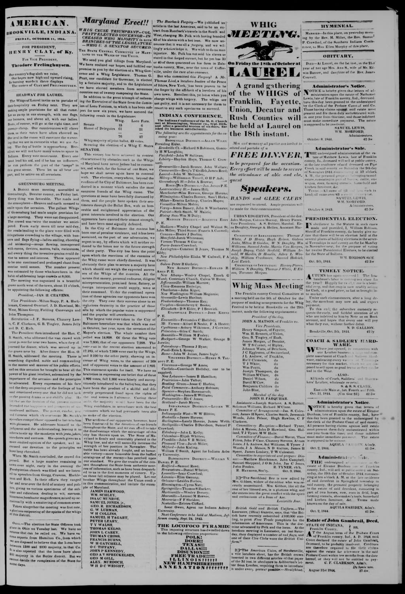

HN HN-142 · October 11, 1844 · Culture, Religion & Media > Media Hoaxes, Retractions & Fabricated Reporting > Fabricated articles
1844 political Roorback narrative circulated as genuine and was later acknowledged as fabricated.
Source: Indiana American, p. 3 — original page.
Report: The openly partisan paper acknowledged that an item in its previous issue—presented as a passage from Roorback's travels and claiming presidential candidate James K. Polk had branded enslaved people—was a forgery. The editor then blamed a political opponent for the fabrication and continued to make other allegations about Polk.
Assessment: Documented contemporary admission that a specific printed election claim was forged. The editor's proposed identity of the forger and its additional allegations were not independently established here. Follow-up open.
Identity-review candidate peers: HN-137:Algorithmic
Class: Revision/retraction (R)
Recorded difference/concern: 1844 political Roorback narrative circulated as genuine and was later acknowledged as fabricated.
Assessment: Original fabrication issue B; locate exact original retraction before claiming issue-by-issue wording.
Source links: https://jacksonianamerica.com/2024/09/16/disinformation-in-the-1844-presidential-campaign/ https://dokumen.pub/not-exactly-lying-fake-news-and-fake-journalism-in-american-history-9780231546591.html
Authentic images retrieved from Hoosier State Chronicles (Indiana State Library). Article crops are located using the archive's own OCR word coordinates and rendered at native crop resolution; article clips are assembled from the archive's own article-block images; page images marked "archive tiles" are stitched from the archive's own tiled page service at its 256-px tile cap; page images marked "issue PDF" are single pages rasterised from the archive's own issue PDF, with the page chosen by matching the headline against the PDF's text layer; page scans are reduced-size access renditions. No images were generated, mocked, or retouched.

Not yet acquired. Queued for provider-specific acquisition testing (see source-acquisition manifest).
URL (preserved verbatim): https://newspapers.library.in.gov/?a=d&d=IA18441011.1.3
Saved research report: Historical_Newspaper_Event_Research_128-152_2026-10-22.md
Evidence note: A newspaper report means a historical publication made a claim; it does not establish that claim as fact. Contemporary reporting is separated from later scholarly context and our own assessment.